Barn Finds
Cluttered garages, dusty storage buildings and decades-old sports cars.

Discreetly buying Porsche, Ferrari, Lamborghini, Shelby and other sports and muscle cars directly from private owners who value privacy and a respectful transaction. Cars in any condition wanted, single cars or whole collections — we make it easy and pick up anywhere.
Or call 904·874·4877What We Buy
We are looking for vehicles and collections with history. If it has a past, we want to hear about it.
Cluttered garages, dusty storage buildings and decades-old sports cars.

Cars that lost momentum and deserve another chapter.


Vehicles and parts discovered through inheritance, property sales and family collections.


Engines, seats, steering wheels, manuals and any other automotive pieces needing a home.


About Us
As a dedicated private collector with a genuine passion for automotive history, I am quietly building a curated collection of the world’s most desirable sports cars and performance icons.
I prefer acquiring cars directly from fellow enthusiasts rather than through auctions or dealers. This allows for complete discretion, fair valuations, and the knowledge that each car is joining a collection where it will be appreciated and properly cared for — not quickly flipped.
If you have (or know of) a special Porsche, Ferrari, Lamborghini, or significant Shelby muscle car that’s ready for its next chapter, I’d welcome a private conversation.
For Owners
Selling a cherished classic is a big decision. Cars have histories — more often than not, they’re part of the family. Here’s why many owners choose a direct, confidential transaction with a private collector.
Your sale stays completely private. No public advertisements, no photos online (unless you want them), and no unwanted attention from tire-kickers or the broader market.
Your car will join a personal collection where it is enjoyed and preserved by someone who shares your passion — not treated as inventory to be resold quickly for margin.
No need to create listings, answer endless questions, coordinate multiple viewings, handle negotiations, or worry about safety and paperwork. One conversation, one fair offer.
Dealers must leave room for profit and overhead. A direct purchase for a private collection can mean a more competitive, straightforward offer with fewer layers.
Deep knowledge of these marques means fair evaluations based on real condition, provenance, and current market realities. No lowball tactics.
If your car is in perfect condition you can feel comfortable knowing that the work you’ve put into your car will be appreciated. That said, we love doing the work also! There’s no better feeling than making sure a car will be saved and part of the next generation to enjoy.
Always buying, any condition, anywhere
If you have one of these (or something similar), we want to hear about it.
We want to hear about any sports car or classic car you have for sale. We are always on the hunt for classic European and American sports cars, muscle cars, and select imports — running or not, show quality or barn find. Every car has a story.
Don’t see your make? We buy well beyond this list.
Tell us what you haveStill searching
These are specific cars and motorcycles we’ve been hunting, some for decades. Know where one is — running, parked, or long forgotten? We want to hear from you.
Still searching
S/N F10AB1C2535 · last confirmed in the US, 1999/2000
Only 31 factory-built Vincent Black Lightnings were produced between 1948 and 1952. Designed for racing, these rare British motorcycles used lightweight magnesium alloy components and specialized high-performance engine parts, making them the fastest production motorcycles in the world during their era.
19 of the bikes are known with an additional 12 missing. They raced all over the world however one we’ve spent a considerable amount of time chasing is S/N F10AB1C2535.
We don’t know the condition of the bike or how complete it is. We can confirm the bike was in the US around the 1999/2000 time frame.
Do you know of any Vincent motorcycles? We’d be happy to hear about any Vincent model ready for a new home. Until then we will keep searching for 2535.
Still searching
1953 250mm spyder, 0282mm · last raced May 1954, then vanished
Missing since the mid 50’s, this 1953 Ferrari 250mm spyder was configured in RHD format. 0282mm’s last race was in May of 1954 at Rallye de Sable-Solesmes. It was a DNF in that race and for some reason never seen again.
I’ve talked to people who have followed the old race course and checked with every farm house along the route to see if the car was pushed into a barn. Apparently, this happened a lot back then when old race cars were wrecked or broken.
Some assumptions can also be made. The car’s owner at the time of the last race was Luigi Chinetti, the American Ferrari importer. It’s logical to think he would have brought the car back to the US.
Through extensive research I’ve found that the car may have in fact ended up back in the US, Texas specifically.
Some modifications were made to the body early on that make it stand apart from other 250mm cars. Back rests molded into the body behind each seat and a 375 type hood scoop were added.
Do you know where this car or any other vintage Ferraris could be? If so please get in touch!
Still searching
“Little Bastard,” s/n 550-0055 · missing since the 1950s
The car made famous by James Dean. Known as the giant killer, Little Bastard s/n 550-0055 has been missing since the 50’s. The transmission sells every now and then to new owners and the engine still resides in a Lotus IX. The car has all but vanished but sadly it’s not the only Spyder missing.
The early Porsche racecars were famous for doing more with less. Lower weight, smaller motors often resulted in better race results. The 550 Spyder evolved into the 550A and then the RS models. There are actually quite a few missing.
One of the 550’s missing is 550-0024. Raced in the 60’s in the NE it would vanish from sight not long after. No record of the owner selling the car was found. He passed in the 80’s and his wife in the early 2000’s. They had no kids and the trail went cold.
If you know of any Porsche racecars sitting around a garage or barn somewhere, please let us know. We’d be interested in buying cars in any condition or even parts from the cars you may have laying around.
Visit again soon to see what else we have been chasing!
Seen one of these? Tell us.Recently rescued
A few of the cars we’ve pulled out of the dark and given a new home. Each one has a story — open it to read ours.
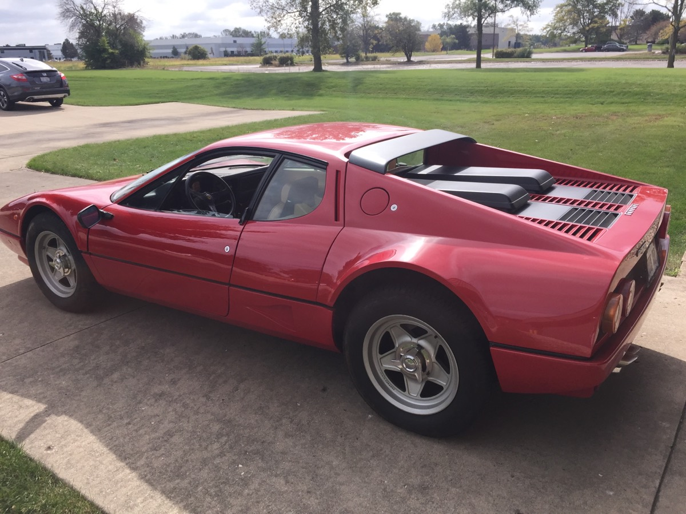
Found in a private collection, the owner’s favorite Ferrari model ever.
Read its story →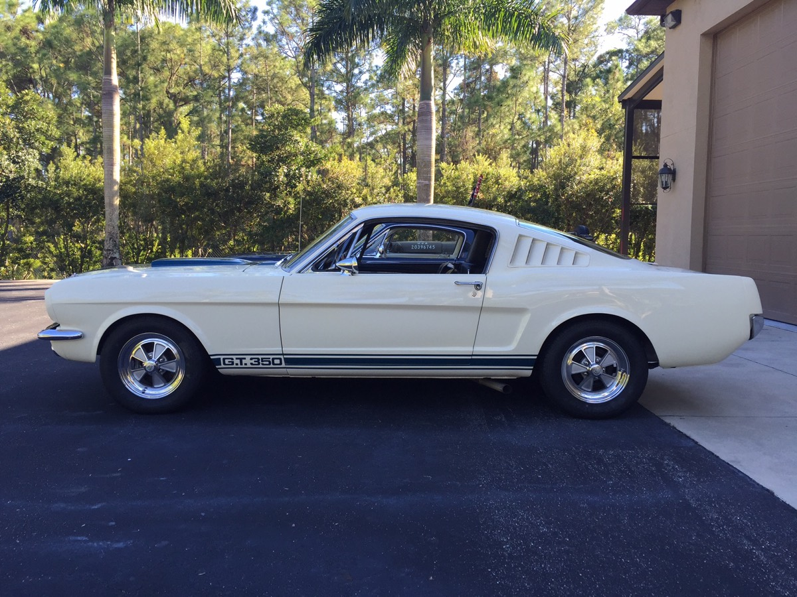
From a very private Ford collection. Veteran owned and restored, he just wanted it to go to a good home.
Read its story →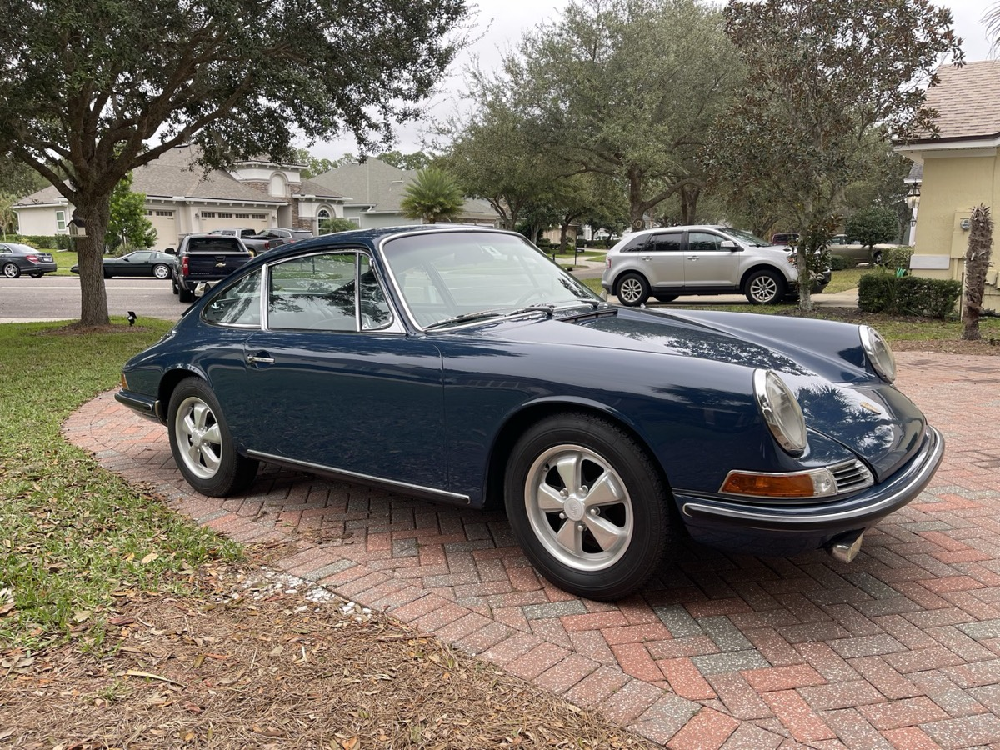
Part of her dad’s collection, she bought it from his estate and enjoyed it for more than a decade.
Read its story →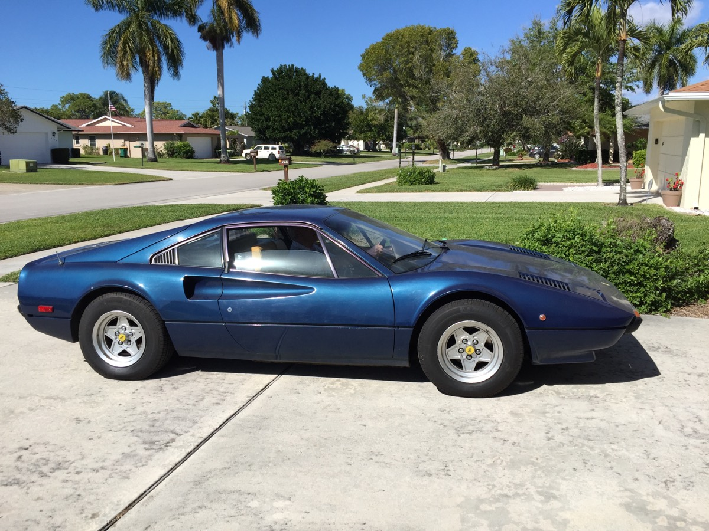
Original owner and new to Switzerland. This car was just waiting for us to bring it home and fix years of deferred maintenance.
Read its story →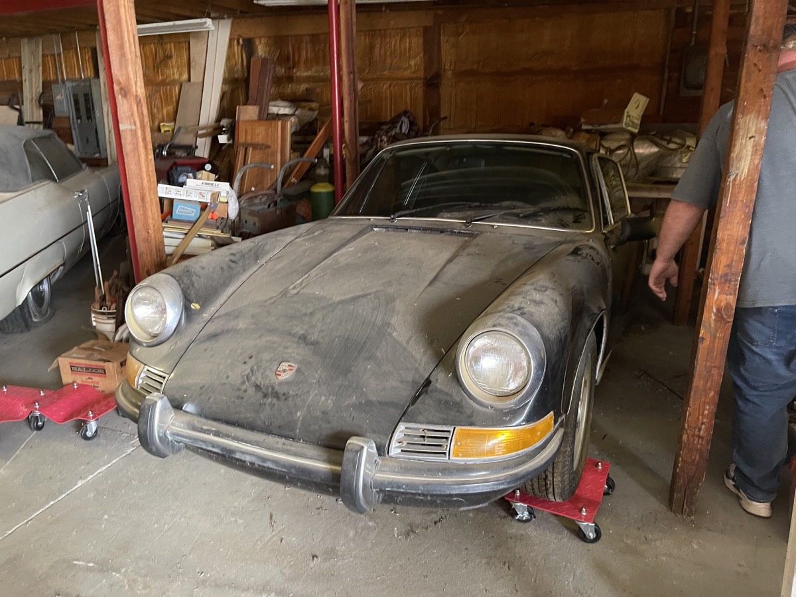
The coolest collectors are hoarders. This beauty was sitting next to a massive taxidermy Grizzly Bear!
Read its story →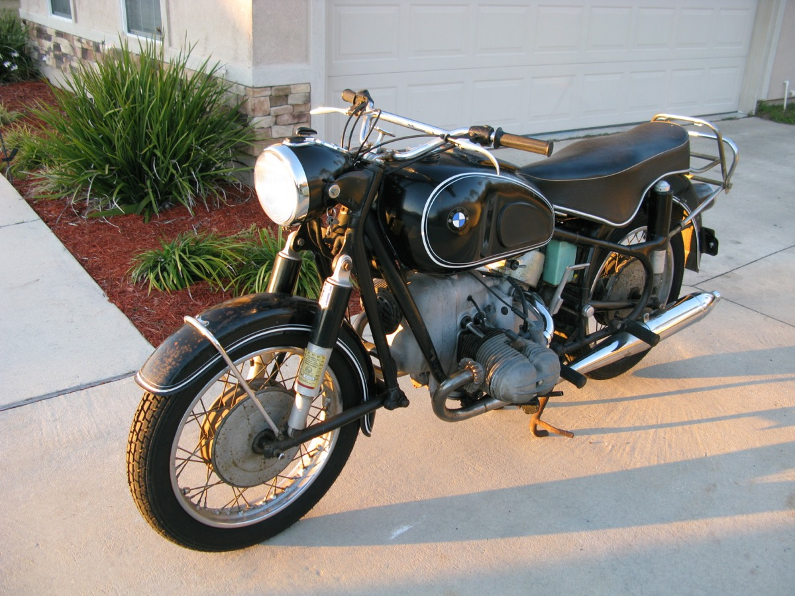
2-owner bike that still had the original dealership’s sticker on the front forks. Wow!
Read its story →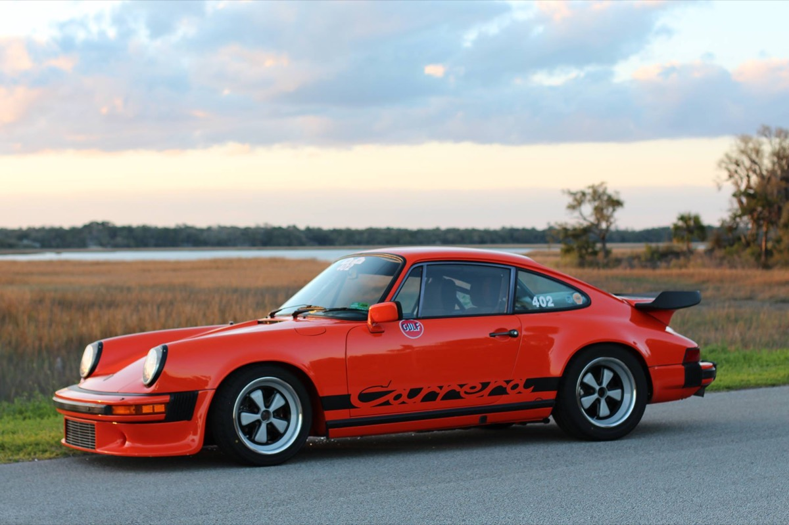
This is the best example of buying the history more than the car.
Read its story →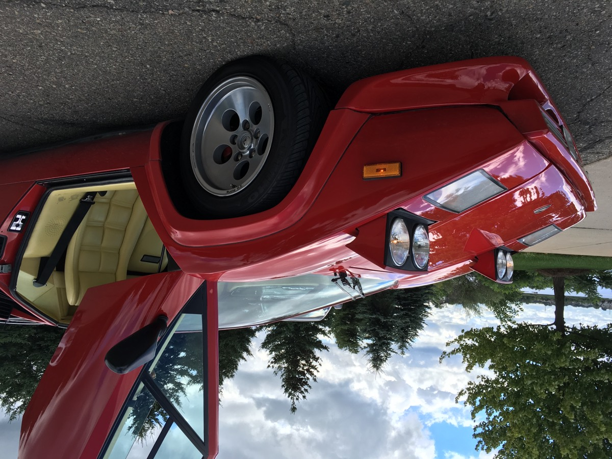
This one barely got away. We did help it find its new home in Japan though. You can bet we’ll be here when it’s ready to come back!
Read its story →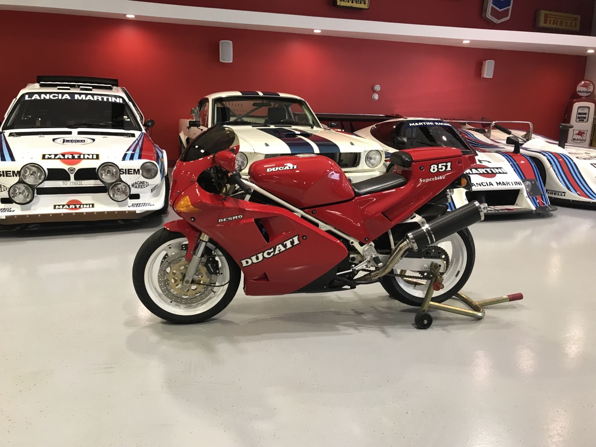
This is the model Ayrton Senna rode before Ducati started naming bikes after him. I just had to buy it.
Read its story →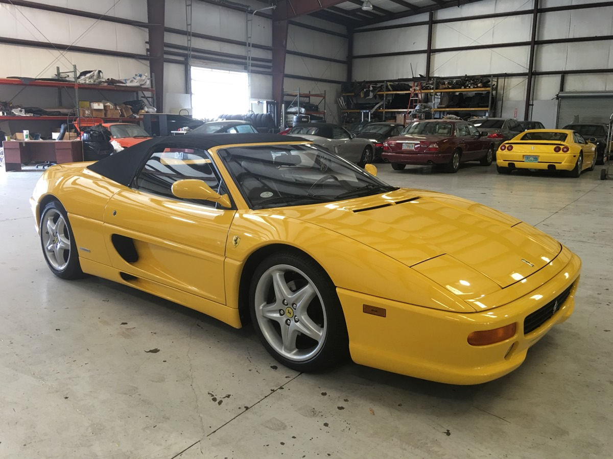
Once owned by artist Romero Britto, who wrapped the car with his artwork. Art cars are so cool!
Read its story →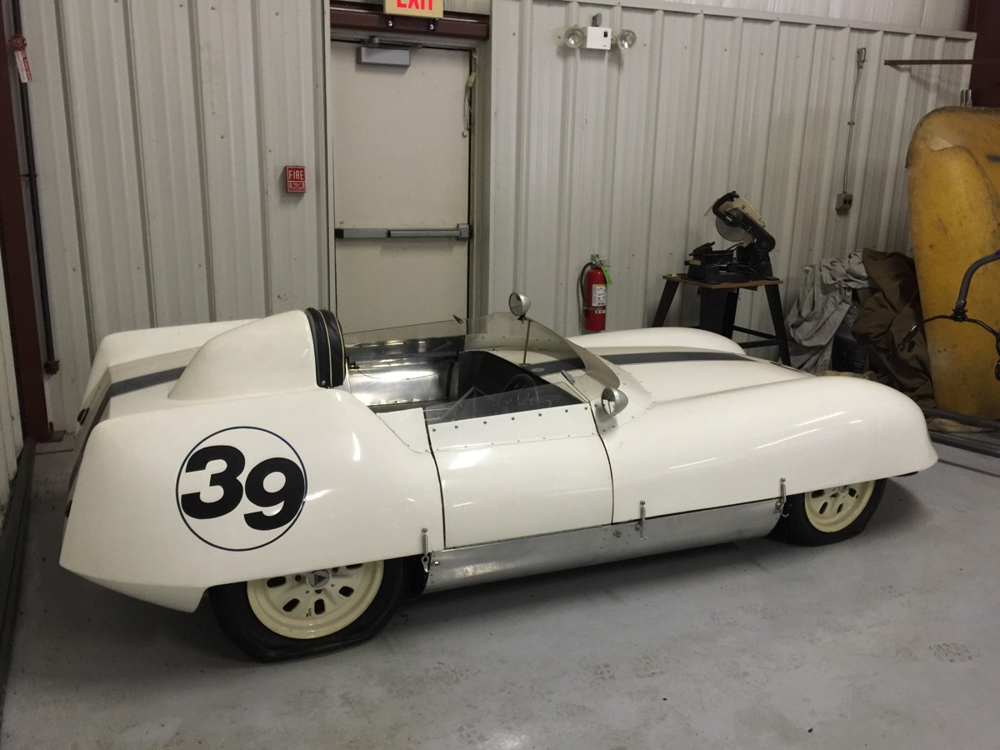
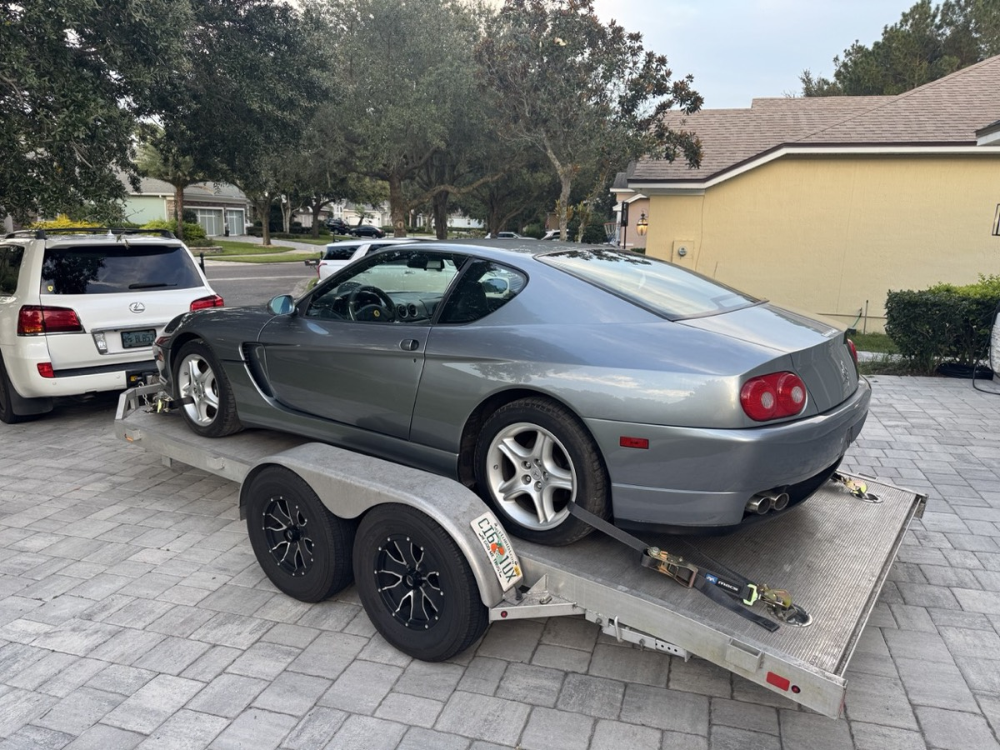
Some cars need more love than others. This car was way more than we bargained for!
Read its story →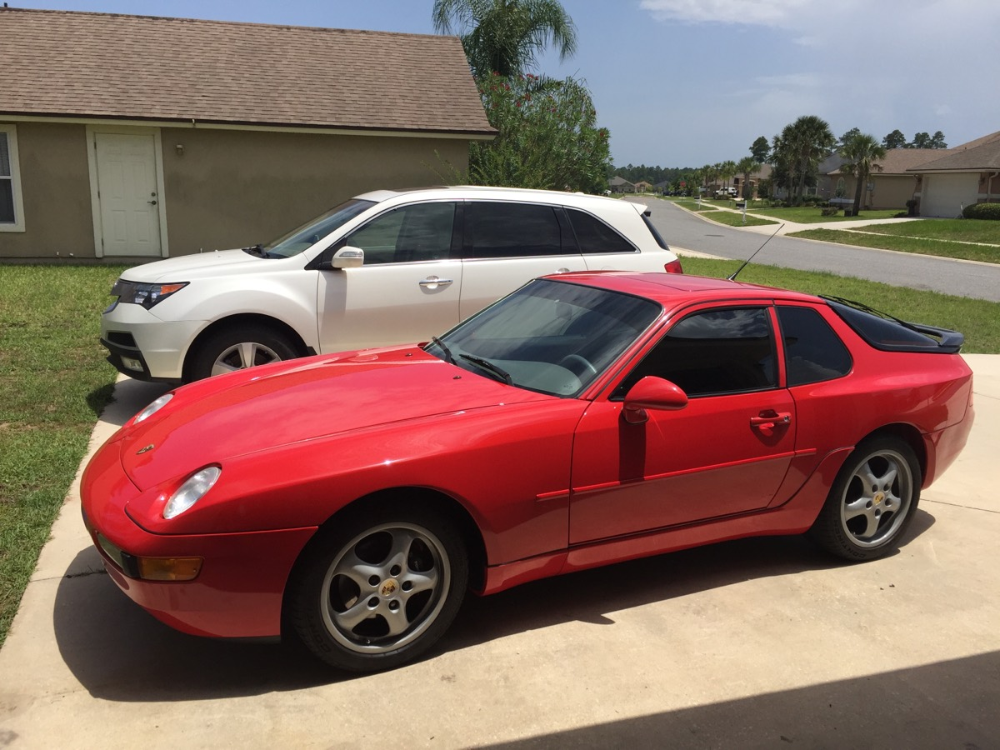
The front-engine Porsches are not to be overlooked. I’ve used these cars as daily drivers for years.
Read its story →Estate & Collection Assistance
Settling a lifetime of cars and parts is overwhelming — and easy to undervalue. We help families quietly understand what it’s worth, and find the right, respectful home for every piece.
Cars, parts and paperwork — on site or from your photos.
Decades of knowledge across classics, muscle and rare parts.
We buy what fits and advise you plainly on the rest.
More collector than dealer
Send a few photos and the basics — a barn find, a project, an estate, or a box of vintage parts. We’ll tell you honestly what it’s worth and where it should go.
How it works — simple & confidential
Use the form, email, or phone. Share the basics — year, make, model, general condition, and location. Photos help, but aren’t required to start.
You’ll hear back quickly with a fair offer based on current market conditions and the specifics of your vehicle.
If we agree on terms, we handle secure transport and all paperwork. Payment is prompt and everything stays confidential.
We arrange transport from anywhere in the United States.